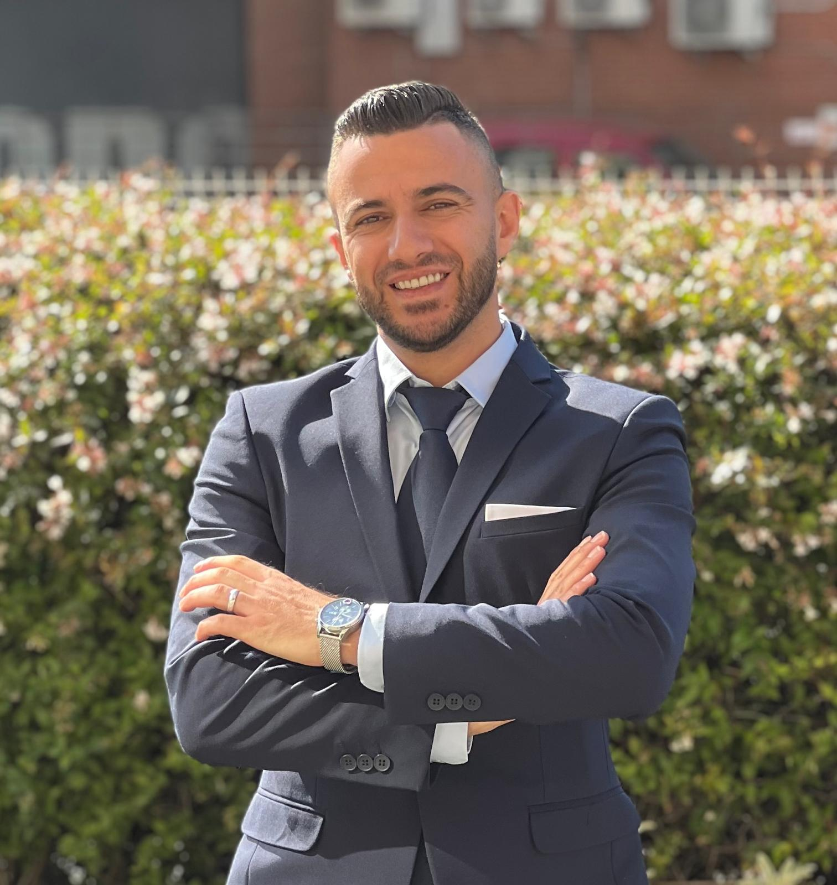

תוכניות אימון מקצועיות
מתודולוגיה מבוססת על הכדורגל הספרדי, עם מאמנים ברמה הגבוהה ביותר
המרחק שבין החלומות שלך למציאות —
נקרא: מעשה.
מועדונים שותפים בספרד

Founder & CEO · Habib Sport Talents
מהסמטאות של הכפר עין מאהל שבגליל התחתון אל מגרשי הכדורגל — בשנת 1999, בגיל 13. הכישרון שלו התגלה מוקדם, והוא משך תשומת לב כשהוא משחק לצד קבוצות מבוגרות ממנו, מתגבר על אתגרים ומכשולים בנחישות שאינה יודעת ויתור.
במקום להסתפק במגרש, הוא בחר להשלים את דרכו גם בזירה האקדמית — לספרד ללמוד ניהול עסקי כדורגל, ולאחר מכן התמחה בגילוי כישרונות (סקאוטינג) באוניברסיטת PFSA בלונדון. את מסעו הלימודי המשיך בברצלונה, שם רכש הכשרה מעמיקה בתרבות הכדורגל הספרדית.
אוניברסיטת SBI, ספרד — ניהול עסקי כדורגל
PFSA, לונדון — גילוי כישרונות וסקאוטינג
ברצלונה, ספרד — תרבות כדורגל, אימון ותזונת ספורט
קשרים עם ריאל מדריד, ברצלונה, לגאנס ולבאנטה
19+ שנות ניסיון בפיזיותרפיה · 8+ שנים עם ילדים על הרצף (ASD), ADHD ועודף משקל
אקדמיית כישרונות כדורגל מובילה, שנולדה מתוך חלום גדול וצמחה במציאות בצעדים מחושבים — עד שהפכה לייחודית מסוגה בארץ.
הרעיון שלנו יצא לדרך בשנת 2021, כשהתחלנו לעצב חזון ארוך-טווח שמטרתו לפתח את השחקן הערבי — פיזית, מנטלית ותרבותית — על פי הסטנדרטים הגבוהים ביותר.
תרבות כדורגל בהשראת האסכולות הספרדיות הטובות בעולם
חיזוק מנטלי ופסיכולוגי לשיפור הביצועים בשטח
בניית גוף חזק ומוכן לעמוד בדרישות המקצוענות
שפה, ידע ותרבות — שחקן מושכל מצליח יותר
חביב ספורט אינה רק אקדמיית כדורגל — אלא מיזם משולב ומקיף שבונה את השחקן מבפנים החוצה.
מתודולוגיה מבוססת על הכדורגל הספרדי, עם מאמנים ברמה הגבוהה ביותר
ליווי פסיכולוגי מקצועי לחיזוק הריכוז ולשליטה בלחץ בזמן משחק
שיעורי ספרדית אינטנסיביים להבנת התרבות ולשיפור הביטחון העצמי
תרגילים ייעודיים לחיזוק המבנה הגופני ולהכנה לרמת מקצוענות
תוכנית תזונה בהשגחת תזונאי לאופטימיזציה מלאה של ביצועי השחקן
טיפולים שוטפים למניעת פציעות ולתחזוקת הגוף בצורה מיטבית
סדנאות אנליטיות לפיתוח חשיבה טקטית והבנת המשחק לעומק
"בחביב ספורט אנו מאמינים שמצוינות אמיתית נבנית על הבנה מקיפה ומאוזנת של כל היבט בשחקן."
תוכנית מקיפה ל-8 תחומים שיבנו אתכם מבפנים החוצה
תוכניות אימון מתקדמות בהנחיית מאמנים מקצועיים המתמחים בתרבות הכדורגל הספרדית, המתמקדות בפיתוח מיומנויות טכניות, טקטיות ופיזיות.
מפגשי תמיכה נפשית וספורטיבית עם מומחים בפסיכולוגיה — לחיזוק הריכוז, שליטה בלחץ ופיתוח יכולות מנטליות לביצועים מיטביים.
שיעורי שפה אינטנסיביים לחיזוק התקשורת והבנת התרבות הספרדית — מרחיבים אופקים ומחזקים ביטחון עצמי בתוך המגרש ומחוצה לו.
תוכנית תזונה מקיפה בהשגחת תזונאי/ת, המבטיחה לגוף את כל הרכיבים הדרושים לגדילה בריאה ולשיפור ביצועים ספורטיביים.
תרגילים ייעודיים בסטודיו "חביב" לחיזוק המבנה הגופני, שיפור הכוח והגמישות — להבטחת מוכנות גופנית מלאה.
תוכניות פיזיותרפיה מותאמות לשמירה על בריאות השרירים והמפרקים, להפחתת פציעות ולהאצת ההחלמה.
אימונים במים לחיזוק הכוח השרירי והגמישות, להפחתת העומס על הפציעות ולהאצת תהליך ההחלמה השרירית.
סדנאות לפיתוח חשיבה אסטרטגית, מיומנויות ניתוח והבנה עמוקה יותר של המשחק — באמצעות מחקר ומעקב מתמשכים.
שירות מלא ומקצועי מתחילת הדרך ועד להגשמת החלום הבינלאומי
מחנות כדורגל בינלאומיים
International Football Camps
מחנות כדורגל מקצועיים בספרד המעניקים לשחקנים הזדמנות להתאמן ולחוות סביבה מקצועית ברמה גבוהה, בשיתוף עם מועדונים ואקדמיות מובילים.
מועדונים שותפים
מבחני קבלה והערכה
Tryouts
ארגון מבחני יכולת מקצועיים לשחקנים מול מאמנים, סקאוטים ונציגים של מועדונים ספרדיים, במטרה לפתוח הזדמנויות להשתלבות במסגרות מקצועיות.
אירועי כדורגל בינלאומיים
Football Events
הפקה וארגון של שבועות כדורגל, מחנות מיוחדים ואירועי ספורט בינלאומיים, כולל מאמנים ואנשי מקצוע ממועדונים ספרדיים.
תיירות כדורגל
Football Tourism
חבילות תיירות כדורגל ייחודיות לחוויה בלתי נשכחת:
ייצוג שחקנים
Player Representation
ייצוג וליווי מקצועי של שחקנים מול מועדונים מקומיים ובינלאומיים, תוך יצירת הזדמנויות לקידום הקריירה בהתאם ליכולות ולפוטנציאל האישי.
ייצוג מועדונים ספרדיים
Spanish Clubs Representation
ייצוג, שיווק וקידום של מועדונים ואקדמיות ספרדיים בשווקים בינלאומיים, כולל פיתוח שיתופי פעולה, מחנות ותוכניות מקצועיות.
חנות חביב ספורט
Habib Sport Store
חנות רשמית למכירת מוצרי Habib Sport, ביגוד ספורט, ציוד מקצועי ומוצרים ייחודיים הקשורים לפעילות החברה.
ניהול מועדוני ספורט
Sports Club Management
ניהול מקצועי ומלא של מועדוני ספורט משלב התכנון ועד הביצוע:
ניהול המחלקה הבינלאומית
International Area Management
הקמה וניהול של מחלקות בינלאומיות במועדוני ספורט, כולל פיתוח קשרים בינלאומיים, שיתופי פעולה אסטרטגיים ותוכניות חילופי ידע.
Connecting Talents. Creating Opportunities. Building Futures.
מחברים כישרונות. יוצרים הזדמנויות. בונים עתיד.
Habib Sport – Your Gateway to International Football
שילוב ייחודי בין אימון ספורטיבי מקצועי לבין ניסיון קליני של 19+ שנה בפיזיותרפיה — לבניית תוכניות אישיות המבוססות על מדע עדכני של התפתחות הילד.
הניסיון הקליני בפיזיותרפיה מאפשר לזהות צרכים תנועתיים מוקדם יותר, להתאים תרגילים באופן אישי ולשלב מטרות טיפוליות בתוך פעילות ספורטיבית מהנה ומעצימה — כי השחקן האמיתי נבנה במחשבה, בגוף וברוח.
מקורות מדעיים: Bremer et al. (2016), Healy et al. (2018), Pontifex et al. (2013), Cerrillo-Urbina et al. (2015), WHO Physical Activity Guidelines (2024), AAP Child Development (2023)
ב"חביב ספורט" אנו שואפים לבנות דור ספורטיבי ערבי מקצועני — שנושא את האמונה בתוכו, את התוכנית בראשו ואת הכוח בגופו. אנו מאמינים שהכדורגל הוא אמצעי לשינוי ושער ליצירת סיפורי הצלחה אמיתיים.
הרחבת פעילות האקדמיה ופתיחת סניפים בערים ערביות שונות
בניית שותפויות אסטרטגיות עם מועדונים ומוסדות ספורט בינלאומיים
ייצוא כישרונות מאומנים ומשכילים אל זירות המקצוענות העולמית
פיתוח מתמיד של התוכניות בהתאם לחידושים האחרונים במדעי הספורט
"שכל שחקן שעבר דרך חביב ספורט יהיה שגריר של החלום הערבי במגרשי העולם."
ארגון אירוע בינלאומי בארץ, בהשתתפות קבוצות ספרדיות נחשבות, שיעניק לשחקנים המקומיים הזדמנות להציג כישרונם מול מאמנים עולמיים.
הקמת קבוצה רשמית מכישרונות חביב ספורט שתתמודד בטורנירים עולמיים — ותרים את שם הארץ מהמקומי אל העולמי.
העלאת שם הארץ מזירה מקומית לחזית עולמית בכדורגל
משיכת תקשורת מקומית ועולמית — טלוויזיה, רדיו ועיתונות
משיכת משקיעים ונותני חסות בינלאומיים
אנו זורעים את התקווה בלב השחקנים הצעירים, ומלטשים אותה בידע, במשמעת ובאמונה עצמית. אנו בונים דור שמאמין שהחלום אפשרי, ושהדרך אל הזירה העולמית מתחילה בצעד אחד — אך צעד מחושב.
יחד, לקראת יצירת דור שמאמין בעצמו וחולם ללא גבולות.